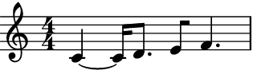
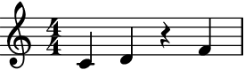
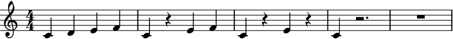
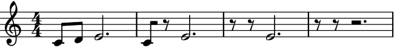

auxjad.Fader¶
-
class
auxjad.Fader(contents: abjad.core.Container.Container, *, fader_type: str = 'out', max_steps: int = 1, processs_on_first_call: bool = False, disable_rewrite_meter: bool = False, omit_time_signatures: bool = False, use_multimeasure_rests: bool = True, mask: Optional[list] = None, boundary_depth: Optional[int] = None, maximum_dot_count: Optional[int] = None, rewrite_tuplets: bool = True)¶ Fadertakes anabjad.Container(or child class) as input and gradually removes or adds notes one by one.- Example:
Calling the object will return an
abjad.Selectiongenerated by the fading process. Each call of the object will apply the fading process to the previous result. By default, the container will be faded out (that is, its note heads will be gradually removed one by one).>>> container = abjad.Container(r"c'4 ~ c'16 d'8. e'8 f'8 ~ f'4") >>> fader = auxjad.Fader(container) >>> notes = fader() >>> staff = abjad.Staff(notes) >>> abjad.f(staff) \new Staff { \time 4/4 c'4 ~ c'16 d'8. e'8 f'4. }
>>> notes = fader() >>> staff = abjad.Staff(notes) >>> abjad.f(staff) \new Staff { \time 4/4 c'4 ~ c'16 r8. e'8 f'4. }
>>> notes = fader() >>> staff = abjad.Staff(notes) >>> abjad.f(staff) \new Staff { \time 4/4 r2 e'8 f'4. }
The property
current_windowcan be used to access the current window without moving the head forwards.>>> notes = fader.current_window() >>> staff = abjad.Staff(notes) >>> abjad.f(staff) \new Staff { \time 4/4 r2 e'8 f'4. }

- Example:
The very first call will output the input container without processing it. To disable this behaviour and apply the fading process on the very first call, initialise the class with the keyword argument
processs_on_first_callset toTrue.>>> container = abjad.Container(r"c'4 d'4 e'4 f'4") >>> fader = auxjad.Fader(container, ... processs_on_first_call=True, ... ) >>> notes = fader() >>> staff = abjad.Staff(notes) >>> abjad.f(staff) \new Staff { \time 4/4 c'4 d'4 e'4 r4 }

- Example:
The fader can be of two types, either
'in'or'out'defined by the keyword argumentfader_type. When it is set to'in', the fader will start with an empty container with the same length and time signature structure as the input music and will gradually add the original note heads one by one.>>> container = abjad.Container(r"c'4 ~ c'16 d'8. e'8 f'8 ~ f'4") >>> fader = auxjad.Fader(container, ... fader_type='in', ... ) >>> notes = fader() >>> staff = abjad.Staff(notes) >>> abjad.f(staff) \new Staff { \time 4/4 R1 }
>>> notes = fader() >>> staff = abjad.Staff(notes) >>> abjad.f(staff) \new Staff { \time 4/4 r2 r8 f'4. }
>>> notes = fader() >>> staff = abjad.Staff(notes) >>> abjad.f(staff) \new Staff { \time 4/4 c'4 ~ c'16 r8. r8 f'4. }
- Example:
The property
fader_typecan also be changed after initialisation, as shown below.>>> container = abjad.Container(r"c'4 d'4 e'4 f'4") >>> fader = auxjad.Fader(container) >>> notes = fader() >>> staff = abjad.Staff(notes) >>> abjad.f(staff) \new Staff { \time 4/4 c'4 d'4 e'4 f'4 }
>>> notes = fader() >>> staff = abjad.Staff(notes) >>> abjad.f(staff) \new Staff { \time 4/4 c'4 d'4 r4 f'4 }
>>> notes = fader() >>> staff = abjad.Staff(notes) >>> abjad.f(staff) \new Staff { \time 4/4 c'4 d'4 r2 }
>>> fader.fader_type = 'in' >>> notes = fader() >>> staff = abjad.Staff(notes) >>> abjad.f(staff) \new Staff { \time 4/4 c'4 d'4 e'4 r4 }
>>> notes = fader() >>> staff = abjad.Staff(notes) >>> abjad.f(staff) \new Staff { \time 4/4 c'4 d'4 e'4 f'4 }

- Example:
The instances of
Fadercan also be used as an iterator, which can then be used in a for loop to run through the whole process. Note that unlike the methodsoutput_n()andoutput_all(), time signatures are added to each window returned by the fader. Use the functionauxjad.remove_repeated_time_signatures()to clean the output when usingFaderin this way.>>> container = abjad.Container(r"c'4 d'4 e'4 f'4") >>> fader = auxjad.Fader(container) >>> staff = abjad.Staff() >>> for window in fader: ... staff.append(window) >>> auxjad.remove_repeated_time_signatures(staff) >>> abjad.f(staff) \new Staff { \time 4/4 c'4 d'4 e'4 f'4 c'4 r4 e'4 f'4 c'4 r4 e'4 r4 c'4 r2. R1 }
- Example:
This class can take many optional keyword arguments during its creation, besides
fader_type.max_stepssets the maximum number of note heads that can be faded in/out at each iteration, ranging between1and the input value (default is also1). By default, calling the object in fade out mode will return the original container, and calling it in fade in mode will return a container filled with rests; setprocesss_on_first_calltoTrueand the fade process will be applied on the very first call.disable_rewrite_meterdisables therewrite_meter()mutation which is applied to the container after every call, andomit_time_signatureswill remove all time signatures from the output (both areFalseby default). By default, the first time signature is attached only to the first leaf of the first call (unless time signature changes require it). Any measure filled with rests will be rewritten using a multi-measure rest; set theuse_multimeasure_reststoFalseto disable this behaviour. An initial mask for the note heads can be set usingmask, which should be alistof the same length as the number of note heads in the input container. Whenfader_typeis set to'out', the mask is initialised with1’s, and when it is set to'in', it is initialised with0’s. Change it to a mix of1’s and0’s to start the process with some specific note heads already hidden/shown. The propertiesboundary_depth,maximum_dot_count, andrewrite_tupletsare passed as arguments to abjad’srewrite_meter(), see its documentation for more information.>>> container = abjad.Container(r"c'4 d'2 e'4 f'2 ~ f'8 g'1") >>> fader = auxjad.Fader(container, ... fader_type='in', ... max_steps=2, ... disable_rewrite_meter=True, ... omit_time_signatures=True, ... use_multimeasure_rests=False, ... mask=[1, 0, 1, 1, 0], ... boundary_depth=0, ... maximum_dot_count=1, ... rewrite_tuplets=False, ... processs_on_first_call=True, ... ) >>> fader.fader_type 'in' >>> fader.max_steps 2 >>> fader.disable_rewrite_meter True >>> fader.omit_time_signatures True >>> fader.use_multimeasure_rests False >>> fader.mask [1, 0, 1, 1, 0] >>> fader.boundary_depth 0 >>> fader.maximum_dot_count 1 >>> fader.rewrite_tuplets False >>> fader.processs_on_first_call True
Use the properties below to change these values after initialisation.
>>> fader.fader_type = 'out' >>> fader.max_steps = 1 >>> fader.disable_rewrite_meter = False >>> fader.omit_time_signatures = False >>> fader.use_multimeasure_rests = True >>> fader.mask = [0, 1, 1, 0, 1] >>> fader.boundary_depth = 1 >>> fader.maximum_dot_count = 2 >>> fader.rewrite_tuplets = True >>> fader.processs_on_first_call = False >>> fader.fader_type 'out' >>> fader.max_steps 1 >>> fader.disable_rewrite_meter False >>> fader.omit_time_signatures False >>> fader.use_multimeasure_rests True >>> fader.mask [0, 1, 1, 0, 1] >>> fader.boundary_depth 1 >>> fader.maximum_dot_count 2 >>> fader.rewrite_tuplets True >>> fader.processs_on_first_call False
- Example:
Use the
contentsproperty to read as well as overwrite the contents of the fader. Notice thatmaskwill also be reset at that point.>>> container = abjad.Container(r"c'4 d'4 e'4 f'4") >>> fader = auxjad.Fader(container) >>> notes = fader() >>> fader.mask [1, 1, 1, 1] >>> staff = abjad.Staff(notes) >>> abjad.f(staff) \new Staff { \time 4/4 c'4 d'4 e'4 f'4 }
>>> notes = fader() >>> fader.mask [0, 1, 1, 1] >>> staff = abjad.Staff(notes) >>> abjad.f(staff) \new Staff { \time 4/4 r4 d'4 e'4 f'4 }
>>> fader.contents = abjad.Container(r"c'16 d'16 e'16 f'16 g'2.") >>> fader.mask [1, 1, 1, 1, 1] >>> notes = fader() >>> staff = abjad.Staff(notes) >>> abjad.f(staff) \new Staff { \time 4/4 c'16 d'16 e'16 f'16 g'2. }

>>> notes = fader() >>> fader.mask [1, 1, 1, 1, 1] >>> staff = abjad.Staff(notes) >>> abjad.f(staff) \new Staff { \time 4/4 c'16 d'16 r16 f'16 g'2. }
- Example:
To run through the whole process and output it as a single container, use the method
output_all().>>> container = abjad.Container(r"c'4. d'8 e'2") >>> fader = auxjad.Fader(container) >>> notes = fader.output_all() >>> staff = abjad.Staff(notes) >>> abjad.f(staff) \new Staff { \time 4/4 c'4. d'8 e'2 r4. d'8 e'2 r2 e'2 R1 }
- Example:
To run through just part of the process and output it as a single container, use the method
output_n()and pass the number of iterations as argument.>>> container = abjad.Container(r"c'4. d'8 e'16 f'16 g'4.") >>> fader = auxjad.Fader(container) >>> notes = fader.output_n(3) >>> staff = abjad.Staff(notes) >>> abjad.f(staff) \new Staff { \time 4/4 c'4. d'8 e'16 f'16 g'4. c'4. r8 e'16 f'16 g'4. c'4. r8 e'16 f'16 r4. }
- Example:
This class also support chords. Their note heads are removed/added one by one.
>>> container = abjad.Container(r"<c' e'>4 ~ <c' e'>16 d'8. <gs e'>8 " ... r"<bf f' a'>8 ~ <bf f' a'>4") >>> fader = auxjad.Fader(container) >>> staff = abjad.Staff(fader.output_all()) >>> abjad.f(staff) \new Staff { \time 4/4 <c' e'>4 ~ <c' e'>16 d'8. <gs e'>8 <bf f' a'>4. <c' e'>4 ~ <c' e'>16 d'8. gs8 <bf f' a'>4. <c' e'>4 ~ <c' e'>16 d'8. gs8 <bf a'>4. c'4 ~ c'16 d'8. gs8 <bf a'>4. r4 r16 d'8. gs8 <bf a'>4. r4 r16 d'8. gs8 bf4. r2 gs8 bf4. r2 r8 bf4. R1 }
- Example:
The function
len()returns the total number of note heads incontents.>>> container = abjad.Container(r"c'4 d'4 e'4 f'4") >>> fader = auxjad.Fader(container) >>> len(fader) 4 >>> container = abjad.Container(r"c'4 ~ c'8 d'8 e'4 ~ e'8 f'8") >>> fader = auxjad.Fader(container) >>> len(fader) 4 >>> container = abjad.Container( ... r"c'4 ~ c'16 r16 d'8 e'4 ~ e'8 f'16 r16") >>> fader = auxjad.Fader(container) >>> len(fader) 4
Note that each individual note head in a chord will count as one note head.
>>> container = abjad.Container(r"<c' e' g'>2 <d' f'>2") >>> fader = auxjad.Fader(container) >>> len(fader) 5 >>> container = abjad.Container( ... r"<c' e' g'>4 ~ <c' e' g'>16 r8. <d' f'>2") >>> fader = auxjad.Fader(container) >>> len(fader) 5 >>> container = abjad.Container(r"<c' e' g'>4 d'4 <e' g' b'>4 r4") >>> fader = auxjad.Fader(container) >>> len(fader) 7
- Example:
Setting the keyword argument
max_stepsto a value larger than1will result in a random number of steps (between1andmax_steps) being applied at each call.>>> container = abjad.Container(r"c'8 d'8 e'8 f'8 g'8 a'8 b'8 c''8") >>> fader = auxjad.Fader(container, ... max_steps=3, ... processs_on_first_call=True, ... ) >>> notes = fader.output_n(3) >>> staff = abjad.Staff(notes) >>> abjad.f(staff) \new Staff { \time 4/4 c'8 d'8 r8 f'8 g'8 a'8 b'8 c''8 r4. f'8 g'8 a'8 b'8 c''8 r4. f'8 r8 a'8 b'8 r8 }
- Example:
The property
maskis used to represent whether each note heads is hidden or shown. It is alistof the same length as the number of note heads in the input container (use thelen()function to read that value). Whenfader_typeis set to'out', the mask is initialised with1’s, and when it is set to'in', it is initialised with0’s. Change it to a mix of1’s and0’s to start the process with some note heads already hidden/shown. Use the methodreset_mask()to reset it back to its default value (depending onfader_type).>>> container = abjad.Container(r"c'4 d'8 e'8 f'4 ~ f'8. g'16") >>> fader = auxjad.Fader(container) >>> fader.mask [1, 1, 1, 1, 1] >>> fader = auxjad.Fader(container, ... fader_type='in', ... ) >>> fader.mask [0, 0, 0, 0, 0] >>> for _ in range(3): ... fader() ... fader.mask [0, 0, 0, 0, 0] [0, 1, 0, 0, 0] [0, 1, 1, 0, 0] >>> staff = abjad.Staff(fader.current_window) >>> abjad.f(staff) \new Staff { \time 4/4 r4 d'8 e'8 r2 }
>>> fader.mask = [1, 0, 1, 1, 0] >>> fader.mask [1, 0, 1, 1, 0] >>> notes = fader() >>> staff = abjad.Staff(notes) >>> abjad.f(staff) \new Staff { \time 4/4 c'4 r8 e'8 f'4.. r16 }
>>> fader.reset_mask() >>> fader.mask [0, 0, 0, 0, 0] >>> notes = fader() >>> staff = abjad.Staff(notes) >>> abjad.f(staff) \new Staff { \time 4/4 R1 }
When a container has a chord, each of its note heads will be represented by an index in the mask, from the lowest pitched one to the highest pitched one. For instance, the container
c'2 <d' e' f' g'>2has five note heads, and applying the mask[1, 0, 1, 1, 0]to it will result in the first, third, and fourth note heads to be shown, in this casec'2 <e' f'>2.>>> container = abjad.Container(r"c'2 <d' e' f' g'>2") >>> fader = auxjad.Fader(container, mask=[1, 0, 1, 1, 0]) >>> staff = abjad.Staff(fader()) >>> abjad.f(staff) \new Staff { \time 4/4 c'2 <e' f'>2 }

- Example:
The mask can also be randomised at any point using the method
random_mask().>>> container = abjad.Container(r"c'8 d'8 e'8 f'8 g'8 a'8 b'8 c''8") >>> fader = auxjad.Fader(container) >>> fader.random_mask() >>> notes = fader() >>> staff = abjad.Staff(notes) >>> abjad.f(staff) \new Staff { \time 4/4 r8 d'8 r4 g'8 a'8 r4 }

>>> fader.random_mask() >>> notes = fader() >>> staff = abjad.Staff(notes) >>> abjad.f(staff) \new Staff { \time 4/4 r8 d'8 r4 g'8 a'8 b'8 r8 }
- Example:
Use
shuffle_mask()to shuffle the current mask. This method will shuffle the mask while keeping the total number of shown note heads constant (that is, it will shuffle the contents of the mask while keeping the total number of1’s and0’s).>>> container = abjad.Container(r"c'8 d'8 e'8 f'8 g'8 a'8 b'8 c''8") >>> fader = auxjad.Fader(container, ... mask=[0, 0, 1, 1, 1, 1, 1, 1], ... ) >>> fader.shuffle_mask() >>> notes = fader() >>> staff = abjad.Staff(notes) >>> abjad.f(staff) \new Staff { \time 4/4 r8 d'8 e'8 f'8 g'8 a'8 b'8 r8 }
>>> fader.shuffle_mask() >>> notes = fader() >>> staff = abjad.Staff(notes) >>> abjad.f(staff) \new Staff { \time 4/4 c'8 d'8 e'8 r8 g'8 r8 b'8 c''8 }
- Example:
By default, all rests in a measure filled only with rests will be converted into a multi-measure rest. Set
use_multimeasure_reststoFalseto disable this. Also, by default, all output is mutated through abjad’srewrite_meter(). To disable it, setdisable_rewrite_metertoTrue.>>> container = abjad.Container(r"c'8 d'8 e'2.") >>> fader = auxjad.Fader(container, ... disable_rewrite_meter=True, ... use_multimeasure_rests=False, ... ) >>> notes = fader.output_all() >>> staff = abjad.Staff(notes) >>> abjad.f(staff) \new Staff { \time 4/4 c'8 d'8 e'2. c'8 r8 e'2. r8 r8 e'2. r8 r8 r2. }
- Example:
To disable time signatures altogether, initialise this class with the keyword argument
omit_time_signaturesset toTrue(default isFalse), or use theomit_time_signaturesproperty after initialisation.>>> container = abjad.Container(r"c'4 d'2 e'4 f'2 ~ f'8 g'1") >>> fader = auxjad.Fader(container, ... omit_time_signatures=True, ... ) >>> notes = fader() >>> staff = abjad.Staff(notes) >>> abjad.f(staff) \new Staff { c'4 d'2 e'4 }
Tip
All methods that return an
abjad.Selectionwill add an initial time signature to it. Theoutput_n()andoutput_all()methods automatically remove repeated time signatures. When joining selections output by multiple method calls, useauxjad.remove_repeated_time_signatures()on the whole container after fusing the selections to remove any unecessary time signature changes.- Example:
This function uses the default logical tie splitting algorithm from abjad’s
rewrite_meter().>>> staff = abjad.Staff(r"c'4. d'8 e'2") >>> fader = auxjad.Fader(container) >>> notes = fader() >>> staff = abjad.Staff(notes) >>> abjad.f(staff) \new Staff { \time 4/4 c'4. d'8 e'2 }
Set
boundary_depthto a different number to change its behaviour.>>> fader = auxjad.Fader(container, ... boundary_depth=1, ... ) >>> notes = fader() >>> staff = abjad.Staff(notes) >>> abjad.f(staff) \new Staff { \time 4/4 c'4 ~ c'8 d'8 e'2 }

Other arguments available for tweaking the output of abjad’s
rewrite_meter()aremaximum_dot_countandrewrite_tuplets, which work exactly as the identically named arguments ofrewrite_meter().- Example:
This class can handle dynamics and articulations too.
>>> container = abjad.Container( ... r"\time 3/4 c'8->\f d'8\p ~ d'4 e'8..-- f'32-.") >>> fader = auxjad.Fader(container) >>> notes = fader.output_all() >>> staff = abjad.Staff(notes) >>> abjad.f(staff) \new Staff { \time 3/4 c'8 \f - \accent d'4. \p e'8.. - \tenuto f'32 - \staccato c'8 \f - \accent d'4. \p r8.. f'32 - \staccato c'8 \f - \accent d'4. \p r4 c'8 \f - \accent r8 r2 R1 * 3/4 }
- Example:
Slurs and hairpins are also supported. Slurs are split when rests appear in the middle of a slurred phrase, while hairpins are shortened and adjusted as required.
>>> container = abjad.Container(r"\times 2/3 {c'2(\p\< d'2 e'2\f} " >>> r"f'4\p\> g'2 a'4\pp)") >>> fader = auxjad.Fader(container) >>> notes = fader.output_n(5) >>> staff = abjad.Staff(notes) >>> abjad.f(staff) \new Staff { \times 2/3 { \time 4/4 c'2 \p \< ( d'2 e'2 \f } f'4 \p \> g'2 a'4 \pp ) \times 2/3 { c'2 \p \< ( d'2 e'2 \f ) } r4 g'2 \p \> ( a'4 \pp ) \times 2/3 { r2 d'2 \p \< ( e'2 \f ) } r4 g'2 \p \> ( a'4 \pp ) \times 2/3 { r2 d'2 \p \< r2 \f ) } r4 g'2 \p \> ( a'4 \pp ) R1 r4 g'2 \p \> ( a'4 \pp ) }

Tip
The functions
auxjad.remove_repeated_dynamics()andauxjad.reposition_clefs()can be used to clean the output and remove repeated dynamics and unnecessary clef changes.Warning
Do note that some elements that span multiple notes (such as ottava indicators, manual beams, etc.) can become problematic when notes containing them are split into two. As a rule of thumb, it is always better to attach those to the music after the fading process has ended.
- Example:
This class can handle tuplets.
>>> container = abjad.Container(r"\times 2/3 {c'8 d'8 e'8} d'2.") >>> fader = auxjad.Fader(container) >>> notes = fader.output_all() >>> staff = abjad.Staff(notes) >>> abjad.f(staff) \new Staff { \times 2/3 { \time 4/4 c'8 d'8 e'8 } d'2. \times 2/3 { r8 d'8 e'8 } d'2. \times 2/3 { r8 d'8 r8 } d'2. r4 d'2. R1 }
Methods
__init__(contents, *[, fader_type, …])Initialises self.
output_all()Goes through the whole fading process and outputs a single
abjad.Selection.output_n(n)Goes through
niterations of the fading process and outputs a singleabjad.Selection.random_mask()Creates a mask randomly filled with
1’s and0’s.reset_mask()Creates a mask filled with a default value for the note heads.
shuffle_mask()Shuffles the current mask.
Attributes
boundary_depthSets the argument
boundary_depthof abjad’srewrite_meter().contentsThe
abjad.Containerto be faded.current_windowRead-only property, returns the previously output selection.
disable_rewrite_meterWhen
True, the durations of the notes in the output will not be rewritten by therewrite_metermutation.fader_typeType of fading, must be either
'in'or'out'.maskMask with
1’s and0’s representing the note heads ofcontents.max_stepsThe maximum number of steps per operation.
maximum_dot_countSets the argument
maximum_dot_countof abjad’srewrite_meter().omit_time_signaturesWhen
True, all time signatures will be omitted from the output.processs_on_first_callIf
Truethen thecontentswill be processed in the very first call.rewrite_tupletsSets the argument
rewrite_tupletsof abjad’srewrite_meter().use_multimeasure_restsWhen
True, multi-measure rests will be used for silent measures.